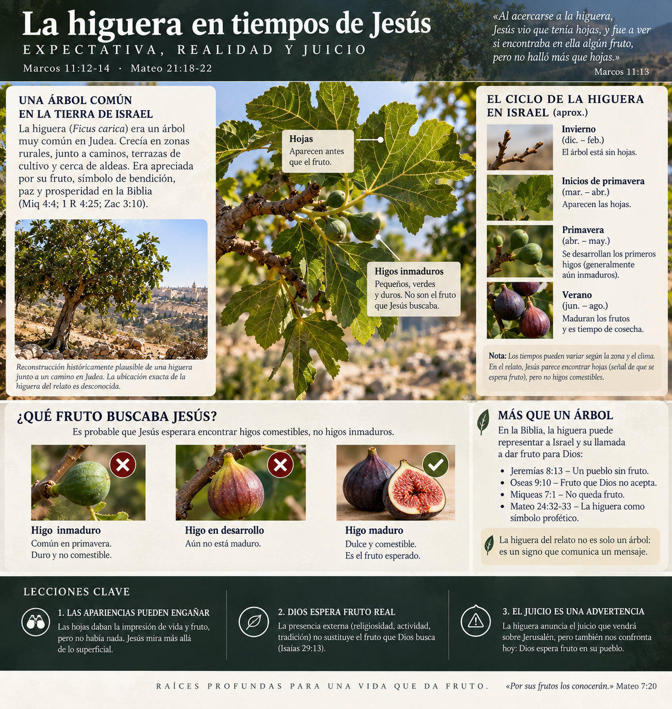
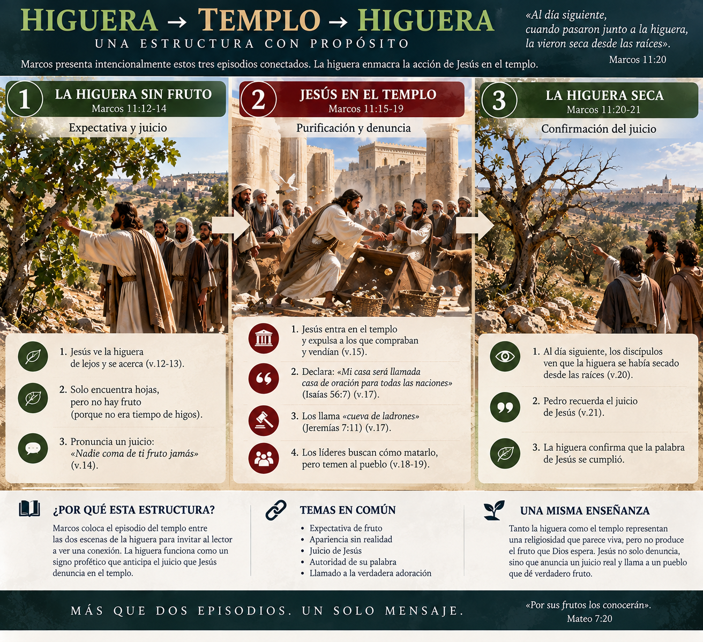
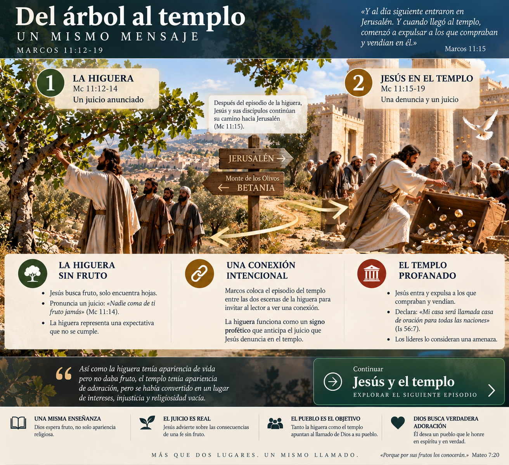

De Betania hacia Jerusalén
Marcos 11:12-13
Al día siguiente, cuando salieron de Betania, Jesús tuvo hambre. Vio de lejos una higuera que tenía hojas y se acercó para ver si encontraba algo en ella…
La narración comienza fuera de Jerusalén. Marcos nos hace caminar con Jesús y sus discípulos hacia la ciudad.
🎬 Ver la escena del camino
Una reconstrucción visual del entorno general ayuda a imaginar el desplazamiento sin afirmar que conocemos el punto exacto donde estaba la higuera.

Reconstrucción históricamente plausible. La ubicación exacta de la higuera es desconocida.
🗺️ ¿Dónde estamos?
Seguí el movimiento desde Betania, por la zona del monte de los Olivos, hacia Jerusalén.

Mapa narrativo orientativo; algunos detalles topográficos son aproximados.
Muchas hojas. Ningún fruto.
Marcos 11:13-14
Al acercarse, no encontró más que hojas… Entonces habló a la higuera, y sus discípulos lo oyeron.
Marcos deja la escena abierta. Todavía no explica al lector por qué este árbol tendrá tanta importancia.
🌿 ¿Qué sabemos de la higuera?
Acá podemos detenernos en el ciclo de hojas y fruto y en qué ayuda realmente a comprender el pasaje, evitando convertir reconstrucciones botánicas discutidas en hechos seguros.

Recurso contextual. La exégesis completa queda reservada para el estudio.
🏛️ Llegaron a Jerusalén
Marcos deja la higuera atrás… por ahora.
Jesús entra en el centro de la vida religiosa
Marcos 11:15-17
Jesús entró en el templo y comenzó a expulsar a quienes compraban y vendían. Entonces enseñó, apelando al lenguaje de los profetas.
📜 ¿Por qué dice «casa de oración»?
La expresión remite a Isaías 56:7 y a su visión de una casa de oración para todos los pueblos. En la versión final, desde acá podríamos abrir el contexto de Isaías sin abandonar el relato.
📜 ¿De dónde viene «cueva de ladrones»?
La expresión procede de Jeremías 7:11, dentro de una denuncia profética contra una falsa seguridad depositada en el templo. Esa conexión ayuda a percibir que la acción de Jesús tiene un trasfondo profético mayor.
Jesús sale de la ciudad
Marcos 11:19
La higuera vuelve a aparecer
Marcos 11:20-21
Al pasar por la mañana, vieron la higuera seca desde las raíces. Pedro recordó lo que Jesús había dicho.
Ahora Marcos permite que el lector mire hacia atrás. Entre la higuera verde y la higuera seca ocurrió precisamente la acción de Jesús en el templo.
¿Notaste la estructura?
El relato del templo queda enmarcado por las dos escenas de la higuera. El recurso completo queda oculto hasta que quieras analizar cómo funciona esa relación.
🔎 Ver cómo Marcos construyó el relato
Este diagrama hace visible la intercalación narrativa: higuera, templo, higuera. La disposición invita a leer los episodios en relación, sin convertir cada detalle del árbol en una alegoría.

Diagrama de la estructura narrativa de Marcos 11:12-21.
🎨 Ver síntesis visual: del árbol al templo
Después de leer el relato completo, esta imagen reúne en una sola mirada la conexión narrativa y profética que venimos siguiendo.

Síntesis editorial del episodio; no sustituye al texto bíblico ni pretende reconstruir exactamente la escena histórica.
🧠 ¿Qué relación hay entre la higuera y el templo?
La intercalación es una señal literaria importante: la higuera funciona como acción profética de juicio y enmarca la confrontación de Jesús con lo que encuentra en el templo. La discusión completa, con matices e interpretaciones, pertenece al estudio exegético.
Del relato al estudio
Contexto histórico · exégesis · conexiones proféticas · teología · aplicación
🎓 Abrir estudio completoContinuar el relato →
Prototipo V2 · recursos cerrados por defecto · enlaces todavía sin conectar.